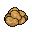

Ingredients
- Rat
- Scissors (gotta prepare it somehow...)
- Something to cook with
- Cabbage
-

Potato - Basil
- Water
- Salt (to taste)
Instructions
Prepare rat for cooking with scissors. Try not to think about it. Prepare vegetables. Combine prepared rat, cabbage, potato, water, and salt in cooking container. Cook until cooked.
Serves: 1
You're the only one left.
Cooking time: Doesn't matter, just don't leave the stove on.